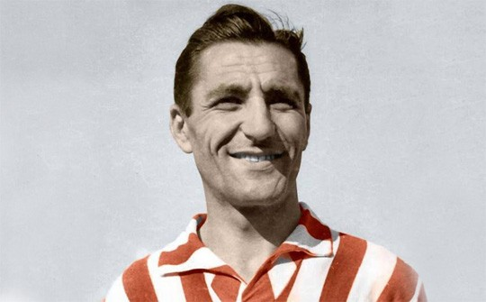
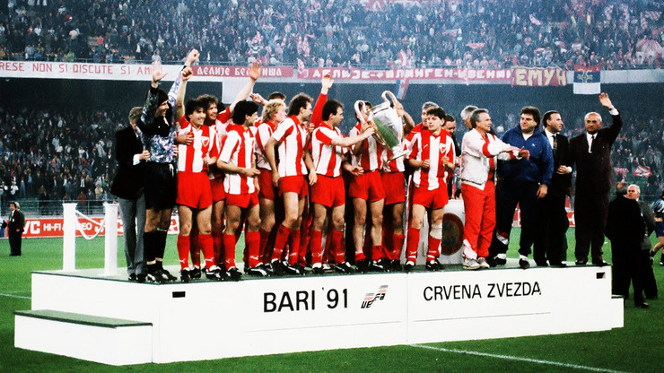
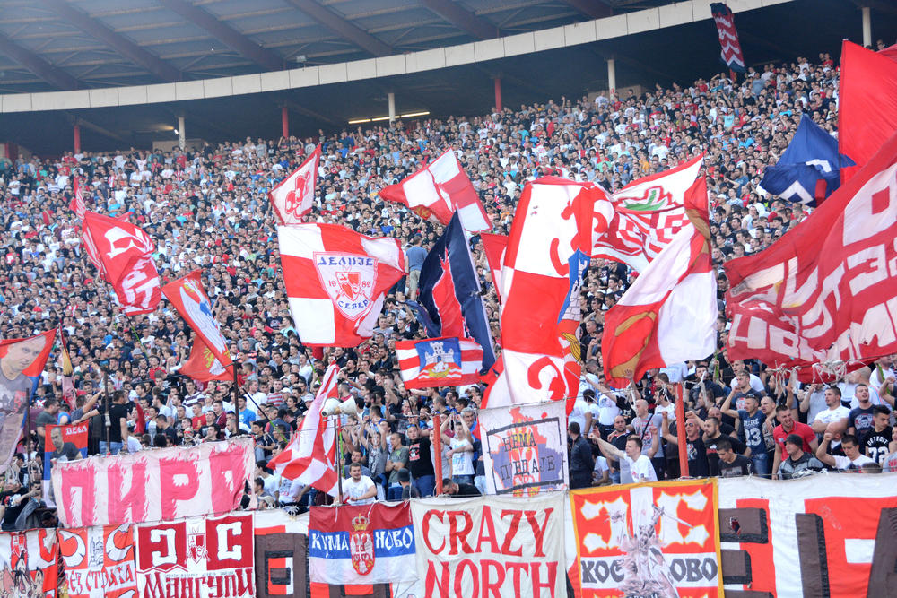

Спортско друштво Црвена Звезда
О клубу
ФК Црвена Звезда је српски фудбалски клуб из Београда и део је СД Црвена звезда. Црвена звезда је најтрофејнији фудбалски клуб у Србији освојивши укупно 56 титула, укључујући 28 домаћих шампионата,[2] 24 национална купа, два Митропа купа, један Куп шампиона и један Интерконтинентални куп. Највећи успех постигнут је 1991. године када осваја Куп европских шампиона у Барију и Интерконтинентални куп у Токију исте године.

Било је то највеће достигнуће Црвене звезде и било ког српског, а тада и југословенског фудбалског клуба. Поред тог успеха у европским такмичењима, издваја се и финале Купа УЕФА 1979, где су поражени од Борусије из Менхенгладбаха.
Игра на свом стадиону који од 2014. носи име по легенди Црвене звезде Рајку Митићу, са капацитетом од 55.538 седећих места. Стадион је међу домаћом публиком познат као Маракана по називу истоименог стадиона у Бразилу, иако му то никад није био званичан назив.
Клупски шампион Европе и света (1986-1991.)
Планови везани за европске успехе Звезде и њено јачање у Европи почели су да се спроводе средином 1980-тих година. У међувремену тиму црвено-белих прикључили су се многобројна звучна имена: Драган Стојковић Пикси, Дарко Панчев, Роберт Просинечки, Дејан Савићевић и други. Поход ка светском врху могао је да почне. Највећи успех Црвене звезде је везан за 1991. када је 29. маја у италијанској луци Бари постала први клуб из Југославије (тадашње СФРЈ) који је освојио наслов првака старог континента.

Утакмица је играна између Црвене звезде и Олимпика из Марсеја. Након регуларних деведесет минута и продужетака није било голова. Победник је одлучен једанаестерцима где је свих 5 играча београдског тима било прецизно а Мануел Аморос је промашио пенал за Олимпик. Тако је Црвена звезда освојила своју прву и за сада једину титулу у Купу европских шампиона. Овај тријумф се данас сматра највећим успехом српског и југословенског клупског фудбала.

Навијачи
Oд самог заснивања клуба најистакнутије личности нашег друштва биле су често виђене на утакмицама на Малом Калемегдану. Популарност је расла са сталним успесима како кошаркашког клуба, али пре свега фудбалског клуба. Црвена звезда је српски клуб са највећим бројем навијача према већини истраживања која су спроведена у Београду, а и на територији читаве Србије.Навијачи Црвене звезде се називају Делије. Ова навијачка група настала је уједињењем дотадашњих мањих навијачких група 7. јануара 1989.
Навијачи Црвене звезде и Олимпијакоса развили су дубоко пријатељство. Навијачи оба тима су себе назвали „Православна браћа“ („Orthodox Brothers“). У ову братску унију навијача касније су се укључили и навијачи Спартака из Москве.
